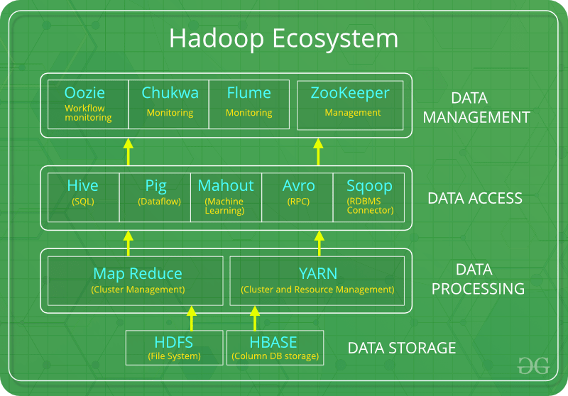

DATA SCIENCE
Data science is a multi-disciplinary field that uses scientific methods, processes, algorithms, and systems to extract knowledge and insights from structured, semi-structured and unstructured data. Data science is much more than simply analyzing data. It offers a range of roles and requires a range of skills.
DATA
Data can be defined as a representation of facts, concepts, or instructions in a formalized manner, which should be suitable for communication, interpretation, or processing, by human or electronic machines. It can be described as unprocessed facts and figures. It is represented with the help of characters such as alphabets (A-Z, a-z), digits (0-9) or special characters (+, -, /, *, <,>, =, etc.).
INFORMATION
Information is the processed data on which decisions and actions are based. It is data that has been processed into a form that is meaningful to the recipient and is of real or perceived value in the current or the prospective action or decision of recipient.
DATA PROCESSING CYCLE
Data processing is the re-structuring or re-ordering of data by people or machines to increase their usefulness and add values for a particular purpose. Data processing consists of the following basic steps - input, processing, and output. These three steps constitute the data processing cycle.
CLUSTERED COMPUTING AND HADOOP ECOSYSTEM
CLUSTER COMPUTING
Cluster computing is a form of computing in which a group of computers are linked together so that they can act like a single entity.
It is the technique of linking two or more computers into a network (usually through a local area network) in order to take advantage of the parallel processing power of those computers.
Big data clustering software combines the resources of many smaller machines, seeking to provide a number of benefits:
• Resource Pooling: Combining the available storage space to hold data is a clear benefit, but CPU and memory pooling are also extremely important. Processing large datasets requires large amounts of all three of these resources.
• High Availability: Clusters can provide varying levels of fault tolerance and availability guarantees to prevent hardware or software failures from affecting access to data and processing. This becomes increasingly important as we continue to emphasize the importance of real-time analytics.
• Easy Scalability: Clusters make it easy to scale horizontally by adding additional machines to the group. This means the system can react to changes in resource requirements without expanding the physical resources on a machine.
HADOOP AND ITS ECOSYSTEM
Hadoop is an open-source framework intended to make interaction with big data easier. It is a framework that allows for the distributed processing of large datasets across clusters of computers using simple programming models. It is inspired by a technical document published by Google.
The for key characteristics of Hadoop are:
• Economical: Its systems are highly economical as ordinary computers can be used for data processing.
• Reliable: It is reliable as it stores copies of the data on different machines and is resistant to hardware failure.
• Scalable: It is easily scalable both, horizontally and vertically. A few extra nodes help in scaling up the framework.
• Flexible: It is flexible and you can store as much structured and unstructured data as you need to and decide to use them later.
Data Science
Watch YouTube VideoHadoop